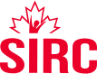

English job boards
96 job boards and aggregators that support English, of which 82 use it as their primary language.
| Board | Type | HQ | Language | API | Partner program |
|---|---|---|---|---|---|
Aboriginal Inclusion Network Indigenous peoples and employers | niche-board | Not recorded | English | API status unknown | unknown |
Adzuna general | aggregator | United Kingdom | English | Self-serve API key | yes |
AgCareers agriculture | board | Canada | English | API status unknown | unknown |
Alberta Job Banks (ALIS) Alberta | government | Canada | English | API status unknown | unknown |
AllStarJobs career resources and links to job sites | directory | Not recorded | English | API status unknown | unknown |
apna blue-collar/gig | board | India | English | API status unknown | unknown |
Appcast general | programmatic-distribution | United States | English | Partner-only API | yes |
ApplyToEducation education | board | Canada | English | API status unknown | unknown |
Arbeidsplassen (NAV) general | government | Norway | Norwegian | Self-serve API key | n/a |
Arbeitnow tech/visa-sponsorship | niche-board | Germany | English | Open API (no key) | n/a |
Bayt general | board | United Arab Emirates | English | API status unknown | unknown |
Best Jobs Canada general | board | Not recorded | English | API status unknown | unknown |
BrighterMonday general | board | Kenya | English | API status unknown | unknown |
Broadbean general | multiposting | United Kingdom | English | Partner-only API | yes |
Canada Jobs general | board | Not recorded | English | API status unknown | unknown |
 Canadian Sport (SIRC) sport and fitness | niche-board | Not recorded | English | API status unknown | unknown |
CareerBeacon general (Atlantic Canada) | board | Canada | English | API status unknown | unknown |
CareerBuilder general | board | United States | English | API status unknown | unknown |
Careerjet general | aggregator | France | English | Self-serve API key | yes |
Careers.Indigenous.Link Indigenous job seekers | niche-board | Canada | English | No known API | unknown |
Careers24 general | board | South Africa | English | API status unknown | unknown |
CareersInFood.com food industry | board | Canada | English | API status unknown | unknown |
CharityVillage nonprofit and charitable sector | niche-board | Canada | English | No known API | unknown |
CivicJobs.ca public sector and municipal | board | Canada | English | API status unknown | unknown |
Connect Nonprofit Jobs nonprofit sector (Ontario) | niche-board | Canada | English | No known API | unknown |
CV-Library general | board | United Kingdom | English | Partner-only API | yes |
Dice tech | niche-board | United States | English | Partner-only API | yes |
Education Canada education | niche-board | Not recorded | English | API status unknown | unknown |
Eluta general | aggregator | Canada | English | API status unknown | unknown |
ESL Cafe ESL and EFL teaching | niche-board | Not recorded | English | API status unknown | unknown |
foundit general | board | India | English | API status unknown | unknown |
Gaulin Media journalism, media and communications | niche-board | Not recorded | English | API status unknown | unknown |
GC Jobs federal public service | government | Canada | English | API status unknown | unknown |
Glassdoor general | board+reviews | United States | English | Partner-only API | yes |
Goodwork Canada environmental and green jobs | niche-board | Not recorded | English | API status unknown | unknown |
Google for Jobs general | search-aggregator | United States | English | Open API (no key) | n/a |
Government of Alberta jobs board Alberta public service | government | Canada | English | API status unknown | unknown |
GulfTalent general | board | United Arab Emirates | English | API status unknown | unknown |
| community | United States | English | Open API (no key) | n/a | |
Handshake students/early-career | niche-board | United States | English | Partner-only API | yes |
HeadHunter (hh.ru) general | board | Russia | Russian | Self-serve API key | yes |
HigherEdJobs higher-ed | niche-board | United States | English | API status unknown | unknown |
Himalayas remote | niche-board | Global (no single HQ) | English | Open API (no key) | n/a |
Idealist nonprofit | niche-board | United States | English | API status unknown | unknown |
Indeed general | aggregator+board | United States | English | Partner-only API | yes |
International IT Jobs IT (inferred from the name, not stated) | board | Not recorded | English | API status unknown | unknown |
ITjobs.ca IT, software and cybersecurity | niche-board | Canada | English | No known API | unknown |
Job Bank general | government | Canada | English | API key on request | yes |
Jobberman general | board | Nigeria | English | API status unknown | unknown |
Jobboom general | board | Canada | French | API status unknown | unknown |
JobG8 general | feed-aggregator | United Kingdom | English | Partner-only API | yes |
Jobillico general | board | Canada | French | Partner-only API | unknown |
Jobindex general | board | Denmark | Danish | Partner-only API | yes |
Jobrapido general | aggregator | Italy | Italian | API status unknown | yes |
Jobs.ca general (network of sector and regional sites) | board | Canada | English | No known API | unknown |
jobs.ch general | board | Switzerland | German | Partner-only API | yes |
Jobsdb general | board | Hong Kong | English | Partner-only API | yes |
JobShark general | board | Not recorded | English | API status unknown | unknown |
JobsMedia unknown | board | Canada | English | API status unknown | unknown |
JobStreet general | board | Malaysia | English | Partner-only API | yes |
| government | Germany | German | Self-serve API key | n/a | |
JobTech (Arbetsformedlingen) general | government | Sweden | Swedish | Open API (no key) | n/a |
Jooble general | aggregator | Ukraine | English | API key on request | yes |
Joveo general | programmatic-distribution | United States | English | Partner-only API | yes |
Kalibrr general | board | Philippines | English | API status unknown | unknown |
LinkedIn general/professional | social-network+board | United States | English | Partner-only API | yes |
Magnet unknown | board | Canada | English | API status unknown | unknown |
Media Job Search Canada media professions | niche-board | Not recorded | English | API status unknown | unknown |
Monster general | board | United States | English | Partner-only API | yes |
Naukri general | board | India | English | Partner-only API | unknown |
NaukriGulf general | board | United Arab Emirates | English | API status unknown | unknown |
Ontario Public Service Careers Ontario public service | government | Canada | English | API status unknown | unknown |
PNet general | board | South Africa | English | API status unknown | unknown |
Pracuj.pl general | board | Poland | Polish | Partner-only API | yes |
Recruitics general | programmatic-distribution | United States | English | Partner-only API | yes |
Reed general | board | United Kingdom | English | Self-serve API key | yes |
Remote OK remote | niche-board | United States | English | Open API (no key) | n/a |
Remotive remote | niche-board | Global (no single HQ) | English | Open API (no key) | n/a |
SEEK general | board | Australia | English | Partner-only API | yes |
SimplyHired general | aggregator | United States | English | API status unknown | unknown |
StepStone general | board | Germany | German | Partner-only API | yes |
Talent.com general | aggregator | Canada | English | Partner-only API | yes |
TalentEgg students and new graduates | board | Canada | English | API status unknown | unknown |
TESL Canada ESL teaching (Canada and overseas) | niche-board | Not recorded | English | API status unknown | unknown |
The Muse early-career | board+employer-brand | United States | English | Self-serve API key | unknown |
Totaljobs general | board | United Kingdom | English | Partner-only API | yes |
USAJOBS public sector | government | United States | English | Self-serve API key | n/a |
Wanted tech | board | South Korea | Korean | API status unknown | unknown |
We Work Remotely remote | niche-board | United States | English | Open API (no key) | n/a |
Welcome to the Jungle tech/startup | board+employer-brand | France | French | Partner-only API | unknown |
Wellfound startup | niche-board | United States | English | No known API | unknown |
Work at a Startup startup | niche-board | United States | English | No known API | unknown |
Workopolis general | board | Canada | English | API status unknown | unknown |
Wow Jobs general | aggregator | Not recorded | English | API status unknown | unknown |
XING Jobs professional | social-network+board | Germany | German | Partner-only API | yes |
ZipRecruiter general | board+aggregator | United States | English | Partner-only API | yes |